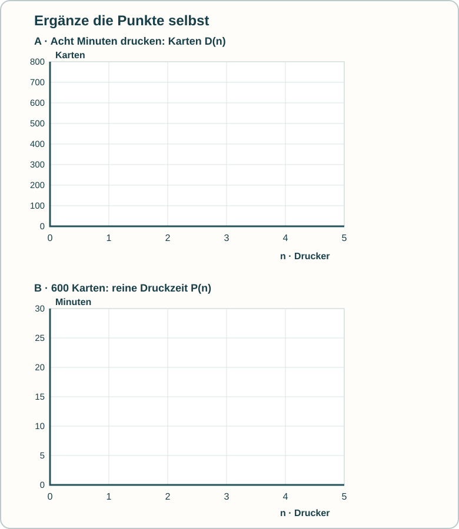

Trage die Werte aus deinem Arbeitsblatt selbst ein. Oben: Karten in acht Minuten. Unten: reine Druckzeit für 600 Karten. Nur ganze Druckerzahlen sind im Fall möglich.

Die Datei enthält keine Antworten oder gespeicherten Eingaben. Zeichne Punkte auf dem Ausdruck oder öffne das SVG in einem Zeichenprogramm. Eine fertige Grafik muss ein Mensch prüfen.